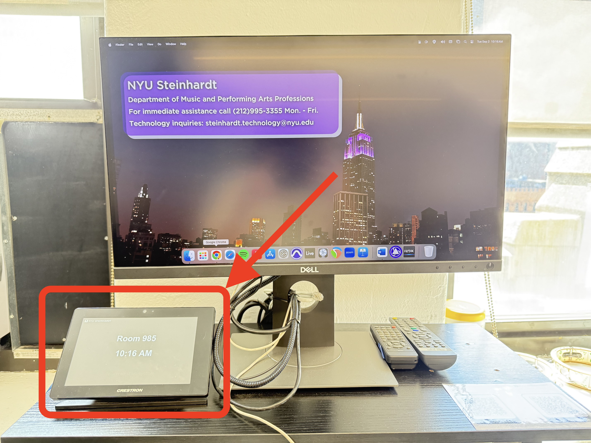
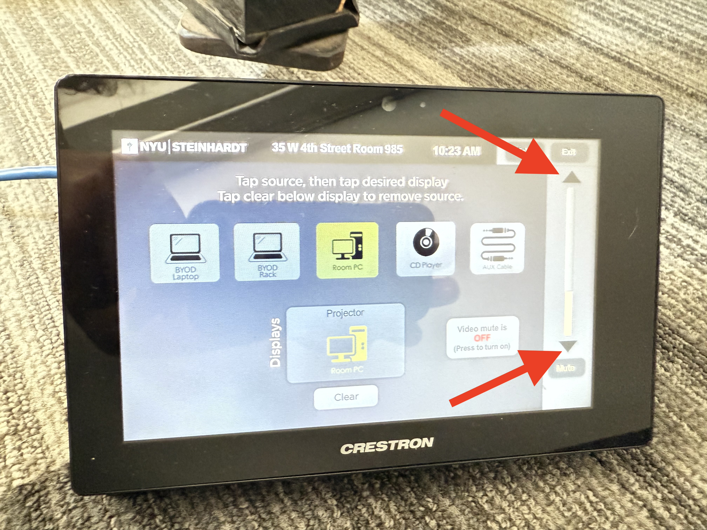
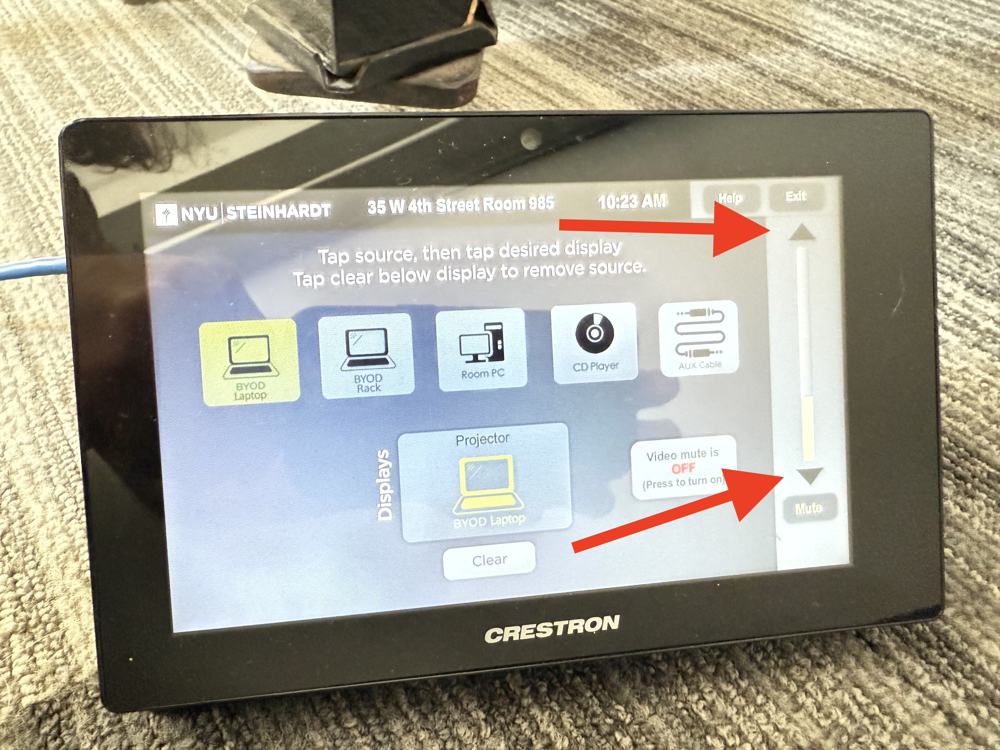

Room 985
Room PC
Tap on the Crestron system.

Click on "Room PC", then click on the Display box.
Adjust volume with the arrows on the right side of the Crestron panel.

Laptop
Tap on the Crestron system.
Click on "BYOD Laptop", then click on the Display box.
Adjust volume with the arrows on the right side of the Crestron panel.
